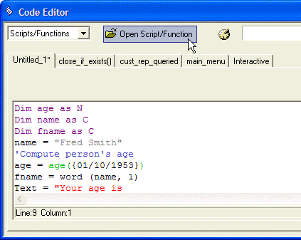

Code Editor File Functions
You write Xbasic scripts in the Code Editor. The Code Editor is a multi-tabbed window that lets you edit multiple scripts at the same time. It always includes at least one tab called the Interactive window where you can test individual lines of Xbasic code and see immediate results.
The Code Editor lets you write scripts in two ways. You can use the graphical Action Scripting method, or you can type in Xbasic commands. For more information on Action Scripting, see the Introduction to Action Scripting book.
To delete a script or function:
Display the Code tab of the Control Panel.
Select the script or function.
Click Delete.
To rename a script or function:
Display the Code tab of the Control Panel.
Right click the select the script or function.
Click Rename.
Enter the new name and click OK.
The Code Editor lets you open multiple scripts simultaneously. When you click the Open Script/Function button in the Code Editor, or when you right-click on the white background in the Code tab of the Control Panel, and select Edit Script or Function..., the Select Script or Function dialog box appears. You can select multiple files, and then click the Open button.

Code Editor
The Code Editor is resizeable, and Alpha Anywhere remembers its size and position every time you open it.
When you save a script or function, Alpha Anywhere checks syntax and issues a warning if you are trying to save code that has syntax errors.
If you are editing multiple global scripts and functions, you can save the "desktop" and then later restore the "desktop" to quickly reopen all of the scripts and functions that you were editing. Select File > Desktop > Save Desktop in the Code Editor. To restore the desktop and the Code Editor to its previous state, select File > Desktop > Restore Desktop.
The Code Editor can optionally insert a date/time stamp when you edit a script or function. You can record the date and time the script was originally created, last updated, and by whom.
If you attempt to reload an unedited version of a script or function you are editing, the Revert to Saved dialog confirms that you want to abandon your edits.
Importing Scripts and Functions
When you have the Code tab of the Control Panel visible, selecting Code > Export allows you to export your scripts and functions to a text file in a format suitable for importing. You can then import these scripts and functions from a text file by selecting Code > Import. This is useful when you receive scripts or functions via email.
Writing and Reading Text Files
To save a script or function as a text file.
Open the script or function in the Code Editor.
Select Code > Write to file to display the File to write dialog box.
Navigate to the destination folder.
Enter the correct filename and click Save.
To read a text file.
Open the script or function in the Code Editor.
Select Code > Read from file to display the File to read from dialog box.
Navigate to the folder that contains the text file.
Select the file and click Open.
Indicate whether to insert the text at the cursor location or to overwrite the current contents of the Code Editor window.
Click OK.
See Also
Code Editor Edit Functions, Other Code Editor Functions, Using the Interactive Window